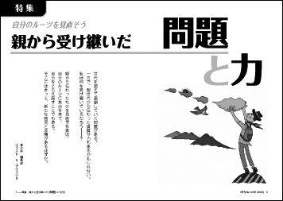
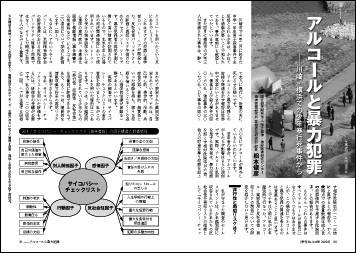
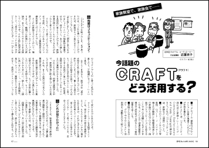
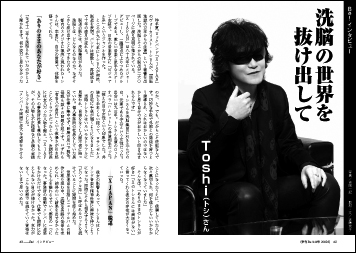
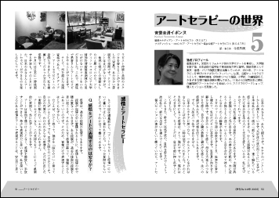
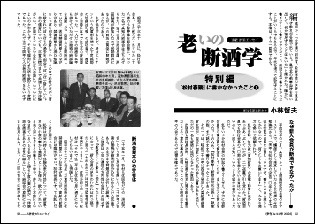

| 【目次】 | |
| 特 集 | |
| ◆自分のルーツを見直そう 親から受け継いだ《問題》と《力》 世代を超えて連鎖していく問題がある。 一方で、親世代から伝わった資質や力もあるかもしれない。 私は何を受け継いでいるだろう――？ 親から伝わったものを見直す作業は、自分のルーツに焦点をあて、自分をとらえ直すことでもある。 そこにはきっと、新たな発見と収穫があるはずだ。 PART1 今いる場所を確かめる |
 イラスト：t・アイランド |
| Topics | |
| ◆アルコールと暴力犯罪 ——川崎・横浜での少年暴行死事件から 【松本俊彦】 ◆アルコール健康障害対策基本法 関係者会議は今こうなっている！ ◆世界のＣＭの飲酒シーンを比べてみたら ◆自殺予防と飲酒問題への介入 薬局が動き始めた！【向井勉】 ◆もと飲んだくれの内科医が地域連携に立ち上がった理由 【二神啓通】 ◆家族教室で、家族会で…… 今話題のCRAFT（クラフト）をどう活用する？ 【近藤京子】 |
  イラスト：NOBU. |
| インタビュー | |
| Toshi（X Japan） 洗脳の世界を抜け出して 「X ＪＡＰＡＮ」は89年にメジャーデビューし、一躍頂点に上りつめたグループである。 激しい音楽と派手なステージ衣装で、日本の音楽史上に「ビジュアル系」というジャンルを作った。 ところが97年にヴォーカルのトシさんが突然、脱退を表明。 バンドは解散し、再結成まで10年の歳月が流れる。 脱退の影には、洗脳集団があった。 洗脳とは、どんなものなのか。なぜそこから抜け出すことができたのか。 都内のスタジオに颯爽と現われたトシさんは、率直に、自分の言葉で、体験を語ってくれた。 取材・文【近藤京子】 |
 |
| 好評連載 | |
| ◆連載 名物ドクターのアルコール教室【成瀬暢也ドクターの巻】 第2回 依存症者の6つの特徴 ◆《連載》ファシリテーションでグループが変わる！【今成知美】 第3回 困った場面をどう変える？ ◆Tokinの たぶん 連載マンガ(2) 当事者研究 ってほどじゃないけど！ ◆アートセラピーの世界（5）【安齋圭清イボンヌ】 ◆《依存症回復者に聞く》 断酒後の冠婚葬祭、どうした？ ◆連載エッセイ「老いの断酒学」特別編 『松村春繁』に書かなかったこと（1）【小林哲夫】 ◆赤木かん子の 「児童文学は心の傷を読み解く宝庫だ！」 その27 3月のライオン ◆チャコとマチコの アサーティブに生きれば、なんとかなる!! ＜17＞電話でもアサーティブ！ 【今回の担当：木村久子】 ◆《今日をいい日にするために［ビィ］編集部が贈る》 自分にＯＫを出すこんな言葉！＜32 |
  |
| ◆ASKの本／Be！バックナンバー／ＡＳＫの電子書籍 ◆ビィ用語集 ◆読者のページ ◆ASK（アルコール薬物問題全国市民協会）のアクション／会員募集 ◆アスク・ヒューマン・ケア研修スケジュール ◆イベント・データ |
|
| ←前の号を見る 次号への投稿はこちら→ |